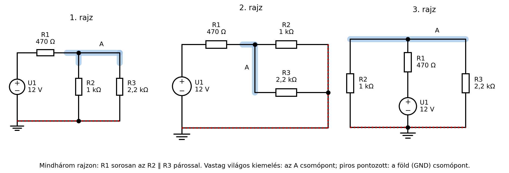
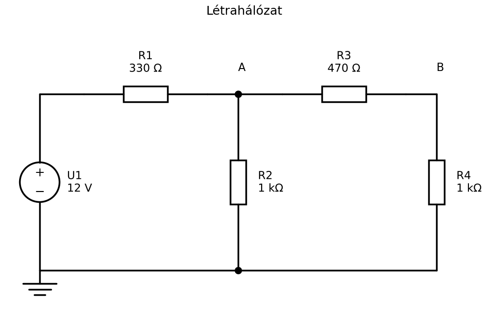
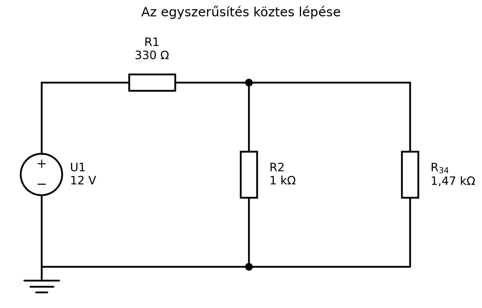

Ebben az alfejezetben megtanulod:
Az Ellenállás és az Ohm-törvény és a Feszültség, potenciál és a föld fogalmaira építünk.
A szenzormodulban a 12 V-os bemenet egyszerre táplálja a tápjelző LED-et, a relét, a szolenoidot és a feszültségátalakítót, és mindegyik árama a közös bemeneten folyik. Mekkora áramot kell elbírnia a csatlakozónak? Ha egy ágon 6,4 V mérhető, mennyi marad a többi elemre? Két egyszerű mérlegszabály válaszol ezekre: az egyik a töltésről, a másik a feszültségről szól. Ezek nem csak ellenállásra érvényesek, hanem minden áramkörre, amelyet ebben a könyvben tárgyalunk.
Három szót kell rögzíteni:
Definíció. A csomópont (node) azoknak a vezetékeknek és kivezetéseknek az összessége, amelyek ideális vezetékkel össze vannak kötve, és ezért azonos potenciálon vannak. Az ág (branch) két csomópont közti, egyetlen árammal jellemzett elemsor. A hurok (loop) olyan zárt út, amelyen végighaladva visszaérsz a kiindulási pontba.
Figyelj: a csomópont nem egy pont a rajzon, hanem az egész vezetékhálózat, amely egyszerre sok vonalszakaszból állhat.
Az első szabály a vízvezetékes csomópontéhoz hasonlít: ami befolyik egy elágazásba, az ki is folyik belőle, mert a csőidom nem gyűjti a vizet. A második egy túrához: ha körbejársz és visszaérsz, a magasságkülönbségek összege nulla, akármerre mentél. A potenciál (Feszültség, potenciál és a föld) pont ilyen „magasság”: minden csomópontnak egy értéke van.
Gondolkodj előre: az alábbi hálózatban két forrás ( V, V) és öt ellenállás van. Merre folyik az áram az ágon: az forrásból a B csomópontba, vagy visszafelé? Tippelj, aztán nézd meg a számokat.
Az áram negatív (−0,96 mA): a B csomópont potenciálja (3,75 V) nagyobb, mint , ezért az áram a felvett nyíllal szemben, B-ből a forrás felé folyik. A negatív eredmény nem hiba; azt jelenti, hogy a valódi irány a feltételezettel ellentétes. (Ha ez a forrás egy valódi tápsín lenne, ellenőrizni kellene, el tud-e nyelni áramot: sok szabályzó nem tud, lásd Teljesítménymérleg, lineáris szabályzó és LDO.) Hogy a hálózat ismeretlen áramait hogyan számoljuk ki, A csomóponti potenciálok módszere és az MNA-megoldó témája; itt a törvényeket a kész eredményen ellenőrizzük.
A Kirchhoff csomóponti törvénye (Kirchhoff’s current law, KCL): egy csomópontba befolyó áramok összege egyenlő a kifolyó áramok összegével. Ha a befolyót pozitívnak, a kifolyót negatívnak írjuk:
Indoklás: ez a töltésmegmaradás. A vezetékhálózat nem gyűjt töltést (annyira kicsi a benne tárolható töltés, hogy a modellben nulla), tehát egy pillanatban annyi lép be, amennyi ki. Az A csomópontban az befolyik, és kifolyik:
A −0,01 csak kerekítés. Ezzel a motiváció első kérdése is megválaszolható: a bemeneti csatlakozón a leágazások áramainak összege folyik. Ha a tápjelző LED 5 mA-t, a relé 30 mA-t, a szolenoid pedig 1 A-t vesz fel, már ez a három 1,035 A, és ehhez jön még a feszültségátalakító árama (ezt a tápellátás fejezete számolja ki). A csatlakozót, a biztosítékot és a vezetéket erre az összegre kell méretezni.
A törvény érvényes időben változó áramokra is, amíg a csomópont maga nem tárol töltést; a kondenzátor ezt úgy oldja meg, hogy az egyik kivezetésén befolyó áram a másikon kifolyik.
A Kirchhoff huroktörvénye (Kirchhoff’s voltage law, KVL): egy zárt hurokban a feszültségek előjeles összege nulla. Eljárás:
A H1 hurokban a forráson a − felől a + felé megyünk (mínusz ), az ellenállásokon az árammal együtt (plusz):
Indoklás: a potenciál egyértékű; egy teljes kör után ugyanabban a pontban ugyanaz a potenciál vár. (Ha a hurkon változó mágneses tér halad át, ez nem teljesül pontosan; ezt a csatolást a Csatolási mechanizmusok és áthallás alfejezet tárgyalja.)
Továbbvitt eredmény. KCL: minden csomópontban; KVL: minden hurokban, a felvett referenciairányok következetes előjelével. Ezt a Feszültségosztó, áramosztó és a terhelés hatása, a Valós források, Thévenin és Norton, A csomóponti potenciálok módszere és az MNA-megoldó és a Váltakozó áramú hálózatszámítás és teljesítmény használja.
Definíció. Két elem soros (series), ha pontosan egy közös kivezetésük van, és ahhoz a csomóponthoz semmi más nem csatlakozik. Ekkor a KCL szerint közös az áramuk.
KVL alapján a teljes feszültség a részek összege: . Ezért a soros kapcsolás egyetlen ellenállással helyettesíthető:
Az eredő mindig nagyobb a legnagyobb tagnál. Példa: az Ellenállás és az Ohm-törvény vezetékellenállása sorba kötve a szolenoiddal , az áram A.
Definíció. Két elem párhuzamos (parallel), ha mindkét kivezetésük ugyanahhoz a két csomóponthoz kapcsolódik. Ekkor közös a feszültségük.
KCL alapján az áram az ágakra oszlik: , tehát
Szavakkal: párhuzamosan a vezetések adódnak össze. Két elemre egyszerűbben:
Az egységellenőrzés: . A jel a „párhuzamosan” rövidítése.
A kisebb dominál. Az eredő mindig kisebb a legkisebb tagnál, és ha az egyik ellenállás sokkal kisebb a másiknál, az eredő majdnem vele egyenlő: . Két egyforma ellenállás eredője a fele.
Továbbvitt eredmény. Soros: (közös áram); párhuzamos: , két elemre (közös feszültség); az eredő soros kapcsolásnál a legnagyobbnál nagyobb, párhuzamosnál a legkisebbnél kisebb. Ezt a Feszültségosztó, áramosztó és a terhelés hatása, az E-sorok, tűrés és jelölések, a Kapacitás, töltés és energia és a Mágneses tér és induktivitás használja.
A topológia az, hogy melyik kivezetés melyik csomóponthoz kötődik. Egy kapcsolás sokféleképpen lerajzolható, a topológia mégis ugyanaz marad.

A harmadik rajzon az R2 és R3 a forrás két oldalán áll, mégis párhuzamos: mindkettő az A csomópont és a föld között van. A módszer: nevezd el a csomópontokat (A, B, GND), és minden elemhez írd fel, melyik két csomópont között van. Azonos pár → párhuzamos.
A fordított csapda is gyakori. Az alábbi kapcsolásban az R2 és az R4 rajzilag egymás mellett, párhuzamosan áll, de nem párhuzamos:

Soros viszont az R3 és az R4: közös a B csomópontjuk, és oda semmi más nem csatlakozik. Az egyszerűsítést ezért hátulról érdemes kezdeni: R3 + R4, ennek párhuzamosa R2-vel, végül sorosan R1.
Nem minden hálózat bontható soros és párhuzamos lépésekre: például a híd (Wheatstone-híd) középső ellenállása sem ezzel, sem azzal nem soros vagy párhuzamos. Ilyenkor a csomóponti módszer vagy a delta–csillag átalakítás segít (ez utóbbit csak megemlítjük, lásd a 8. feladatot).
1. lépés: R3 és R4 soros. .
2. lépés: R2 és párhuzamos.
3. lépés: sorosan R1. .

Vissza az elemekre. A teljes áram mA. Az R1-en V, tehát V. Ebből mA és mA. Végül V és V.
Ellenőrzés. KCL az A-ban: mA ✓. KVL a jobb hurokban: ✓. Teljesítménymérleg: a forrás mW-ot ad le, az ellenállások mW-ot vesznek fel ✓.
Az elkit.units series és
parallel függvénye pontosan az eredőképleteket valósítja
meg; egymásba ágyazva egy teljes egyszerűsítést leírnak.
from elkit import units, dc
R1, R2, R3, R4 = 330.0, 1000.0, 470.0, 1000.0
R34 = units.series(R3, R4)
R234 = units.parallel(R2, R34)
Re = units.series(R1, R234)
I = 12.0 / Re
print(f"R34 = {R34:.0f} Ω, R234 = {R234:.1f} Ω, Re = {Re:.1f} Ω, I = {units.fmt(I, 'A')}")
c = dc.Circuit().add_vsource("U1", "in", "0", 12.0)
for nev, a, b, r in (("R1", "in", "A", R1), ("R2", "A", "0", R2),
("R3", "A", "B", R3), ("R4", "B", "0", R4)):
c.add_resistor(nev, a, b, r)
s = c.solve()
print(f"U_A = {s.v('A'):.2f} V, U_B = {s.v('B'):.2f} V")
print(f"|KCL-hiba| az A-ban: {abs(s.i('R1') - s.i('R2') - s.i('R3')) * 1e3:.9f} mA")
leadott = -s.power("U1")
felvett = sum(s.power(n) for n in ("R1", "R2", "R3", "R4"))
print(f"leadott {units.fmt(leadott, 'W')}, felvett {units.fmt(felvett, 'W')}")R34 = 1470 Ω, R234 = 595.1 Ω, Re = 925.1 Ω, I = 13 mA
U_A = 7.72 V, U_B = 5.25 V
|KCL-hiba| az A-ban: 0.000000000 mA
leadott 156 mW, felvett 156 mWA dc.Circuit nem sorosan-párhuzamosan egyszerűsít, hanem
egyenletrendszert old meg; ez A csomóponti
potenciálok módszere és az MNA-megoldó alapja. Most független
ellenőrzésként használjuk: a két út ugyanazt adja.
Az alfejezet elején lévő hálózat interaktív változatán:
| Tünet | Ok | Javítás |
|---|---|---|
| A KVL-összeg nem nulla | Összekevert előjel a forráson vagy az ellenálláson | Rajzold be a nyilakat, és mondd ki hurkonként: „a nyíl irányában +, ellene −” |
| „Párhuzamos” ellenállások eredőjével rossz eredmény | Rajzi hasonlóság alapján ítéltél | Nevezd el a csomópontokat; párhuzamos, ha mindkét kivezetés azonos csomópontpáron van |
| Sorosnak vett elemek között leágazás van | A közös csomópontból harmadik ág indul | Soros csak akkor, ha a köztes csomópontra semmi más nem csatlakozik |
| Párhuzamos eredő nagyobb, mint a tagok | -t írtál a nevező helyett a számlálóba, vagy vezetést ellenállásnak vettél | Józanész-ellenőrzés: az eredő kisebb a legkisebbnél |
| Az áram „elfogyott” az ellenálláson | Az energia és a töltés keverése | A KCL szerint az áram a soros ágban mindenütt ugyanaz |
("s", a, b, …) / ("p", a, b, …)
alakú, egymásba ágyazott leírásból kiszámolja az eredőt. Ellenőrizd a
létrahálózaton.A csomópont egy egész, azonos potenciálú vezetékhálózat. A KCL (töltésmegmaradás) szerint a csomópontba befolyó és kifolyó áramok előjeles összege nulla; a KVL (a potenciál egyértékű) szerint egy hurok feszültségeinek előjeles összege nulla. A negatív eredmény a felvett iránnyal ellentétes tényleges irányt jelent. Soros elemeknek közös az áramuk, ; párhuzamos elemeknek közös a feszültségük, vezetéseik adódnak, két elemre , és a kisebb ellenállás dominál. A topológia számít, nem a rajz alakja: a csomópontok elnevezése dönti el, mi mivel van sorosan vagy párhuzamosan. Ezek a törvények a következő alfejezetek alapjai.
1. KCL: , így mA, és kifolyó irányú.
2. kΩ, mA. V, V, V; az összeg V ✓.
3. Három egyforma: . A másik: .
4. Két párhuzamos 100 Ω eredője 50 Ω, de mindegyik a teljesítmény felét, 0,125 W-ot kapná, ami több, mint 0,1 W. Négy darab 200 Ω párhuzamosan: , darabonként W ✓ (tartalékkal). (Két soros 100 Ω-os pár párhuzamosan 100 Ω-ot adna, az tehát nem a kért érték.)
5. , A; V; W.
6. ; ; ; mA; V; V.
7.
def eredo(halo):
if isinstance(halo, (int, float)):
return float(halo)
kind, *reszek = halo
ertekek = [eredo(r) for r in reszek]
return units.series(*ertekek) if kind == "s" else units.parallel(*ertekek)
letra = ("s", 330, ("p", 1000, ("s", 470, 1000)))
print(f"{eredo(letra):.1f} Ω")925.1 Ω8. Delta: két kivezetés között az egyik 3 kΩ párhuzamos a másik kettő soros 6 kΩ-jával: kΩ. Csillag: két ág sorosan, kΩ (a harmadik ág vége szabad, nem folyik benne áram). A szimmetria miatt bármely kivezetéspárra ugyanez. Általánosan a szimmetrikus delta csillaggal egyenértékű.